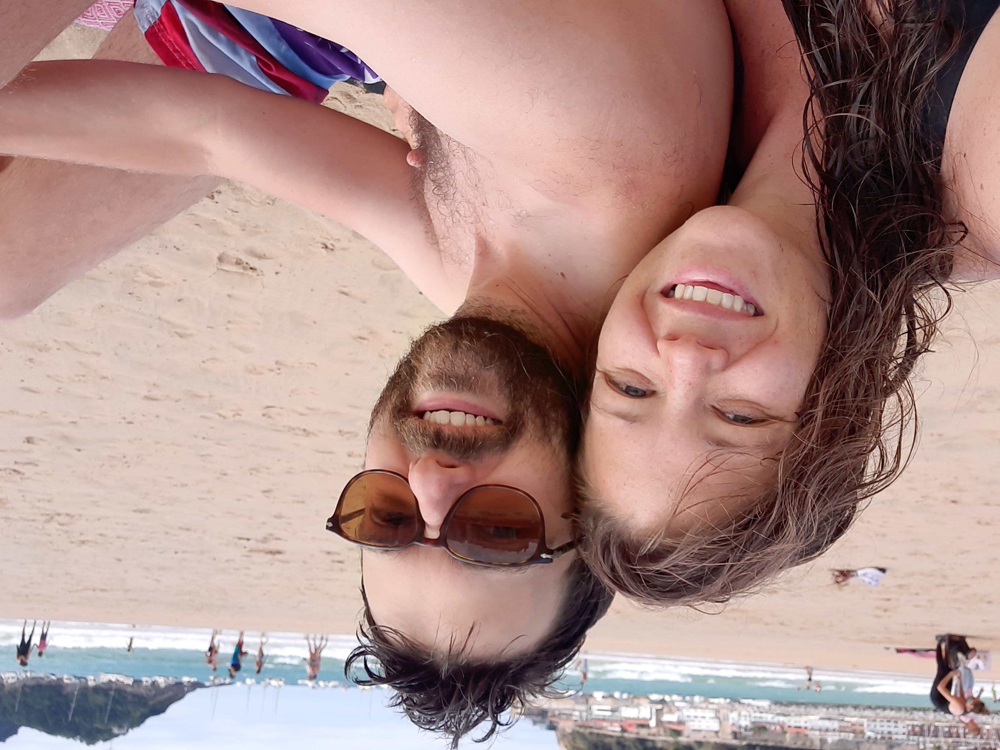
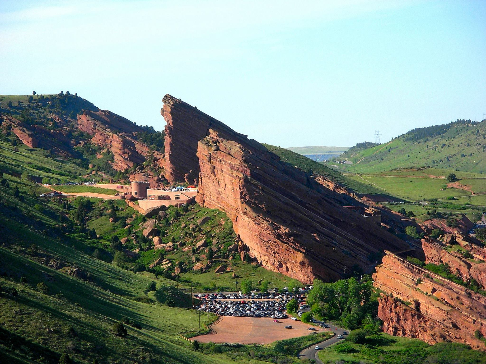
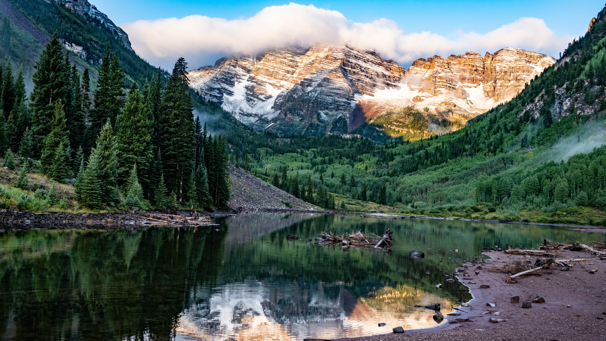
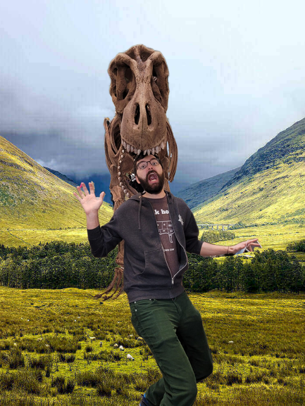
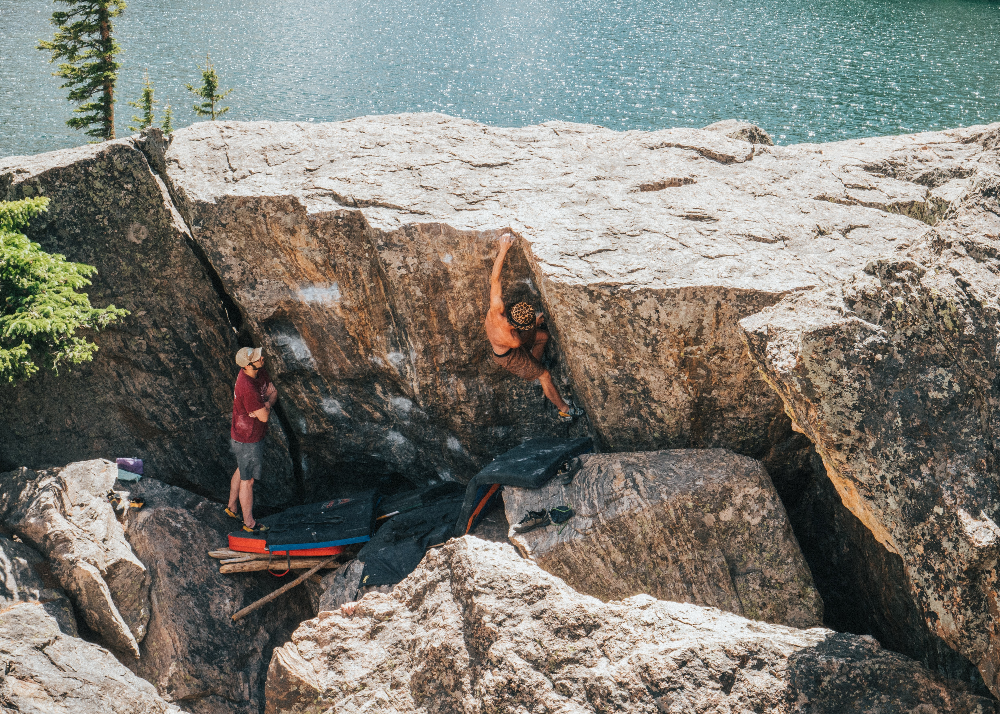
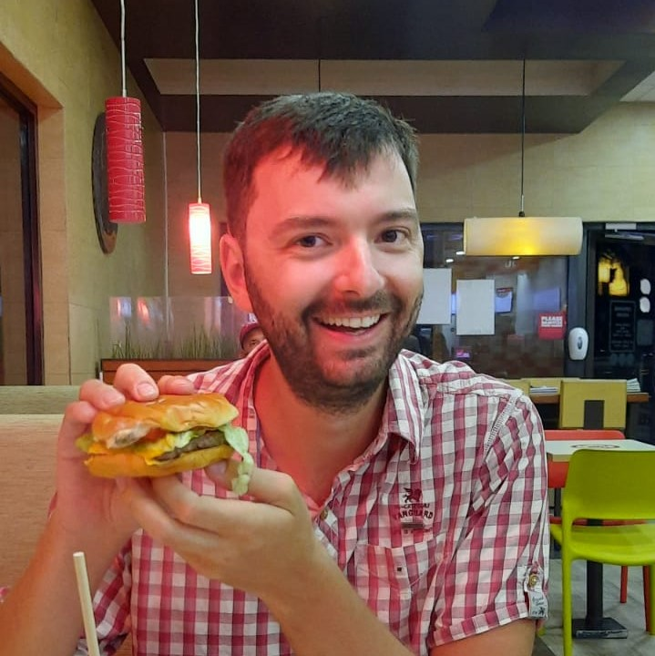
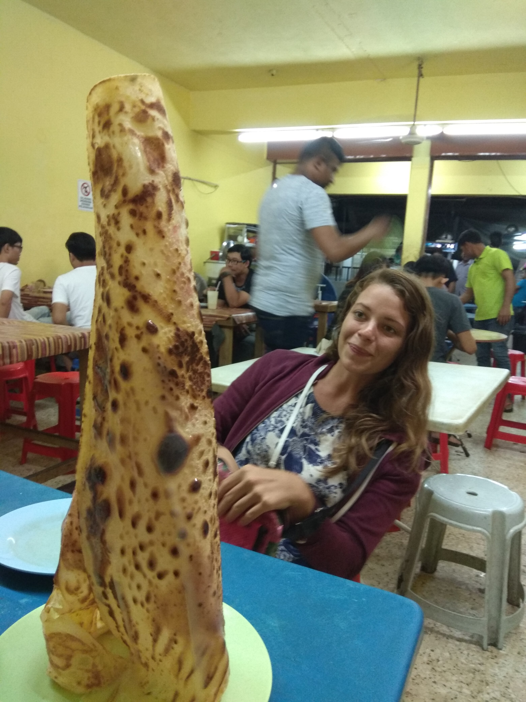

Things to do
So you came all the way from across the world to our wedding and you are looking for some fun things to do during the rest of your stay? Here are some suggestions:

Red Rocks Park and Amphitheatre
The venue is located close to Red Rocks, a beautiful concert venue that has hosted many legendary acts. When they are not hosting bands, you can openly walk the venue. They host yoga and movie sessions in the summer as well. For current activities check their website.Hiking
There are lots of trailheads close to Denver. In fact the Chavez and Beaver Brook Trail Loop is only 10 minutes away from our wedding venue. This should be a ~3 hour loop of moderate walking. The picture on the right is from Maroon Bells near Gunnisson, about a 4 hour drive from Colorado.


Cultural
There is plenty of culture in Denver itself. Random recommendations are:Meowolf, for a weird artsy experience.
The Denver Art Museum
The Denver Zoo
The Denver Museum of Nature and Science
Union station and the downtown area
Bouldering
Yes you can go bouldering in nature here! In fact you can go bouldering on actual boulders in a place called Boulder! Most bouldering gyms rent out crash pads to non-members as well. Fedde and Kayla have a membership to the spot bouldering gym and can introduce first timers for free too, so send him a message if you want go bouldering somewhere before the wedding.


Eat American
There are lots of interesting things to eat in and around Denver, a couple of our favorites are:Buckhorn Exchange ($$$): Very American, famous for their fried bull testicles.
AJ's BBQ ($$): For real American BBQ!
Dozens ($/$$): A great breakfast place!
For the non-meat eaters: City-o-city
Just don't try to eat pizza in Colorado, it's terrible!
Foreign Food
American's eat a lot of food from all different cultures:Vietnames: Phở 79 or Phở-natic.
(Tex-)Mex: The Blue Bonnet, Torchies Tacos
Colombian: La Chiva
For non-meat eaters: Bang up to the elephant, it's carribean style food


Drinks
People here like to drink beer at microbreweries or have a cocktail.Retrograde: A true speakeasy with great cocktails. Get there early!
Dos Luces: Only corn-brewed beers
Cerebral Brewing: Weird beers!
Grandma's House: Look's just like Grandma's house!
The Coors tour: A free tour of the cours-factory, with two free beers at the end!